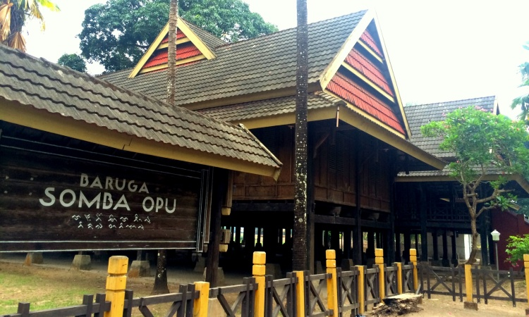

Tur Virtual
Masuki panorama 360° Baruga dan jelajahi seluruh titik orientasi.
Masuk Tur
Jelajahi kompleks Baruga dalam tur virtual 360°. Bangunan panggung kayu ini berfungsi sebagai balai pertemuan dan pusat kegiatan adat: musyawarah, penerimaan tamu, hingga upacara sakral. Tata ruangnya menonjolkan alun‑alun/halaman tengah, serambi terbuka sebagai ruang transisi, serta atap pelana/limasan bertumpuk untuk sirkulasi udara tropis.
Masuki panorama 360° Baruga dan jelajahi seluruh titik orientasi.
Masuk TurPahami konsep geometri, proporsi, dan struktur numerik pada Baruga.
Baca ArtikelPahami cara menggunakan website untuk bahan ajar.
PelajariLihat model 3D Bugis Traditional House untuk detail konstruksi autentik.
Lihat ModelBaruga adalah sebutan balai adat/rumah besar di kawasan Sulawesi yang digunakan sebagai ruang komunal. Secara arsitektural, Baruga umumnya bertipe rumah panggung dengan struktur kolom kayu, lantai papan, dan kolong yang berfungsi untuk sirkulasi, penyimpanan, serta meredam kelembapan. Bidang atapnya lebar untuk melindungi serambi dan jalur sirkulasi, sementara bukaan silang memungkinkan ventilasi alami yang baik.
Dalam konteks budaya, Baruga menjadi simbol kebersamaan—tempat berlangsungnya musyawarah, pendidikan adat, kesenian, dan penyambutan tamu kehormatan. Elemen-elemen seperti serambi depan, ruang dalam, dan sayap bangunan membantu memisahkan aktivitas publik–semi privat–privat secara halus namun tetap terbuka terhadap lingkungan sekitarnya.
Tur virtual ini menampilkan titik-titik orientasi bernomor (0–53) agar pengunjung dapat memahami susunan massa, sirkulasi, dan hubungan antar-ruang: dari akses utama, serambi, koridor penghubung, hingga halaman tengah yang menjadi fokus visual.